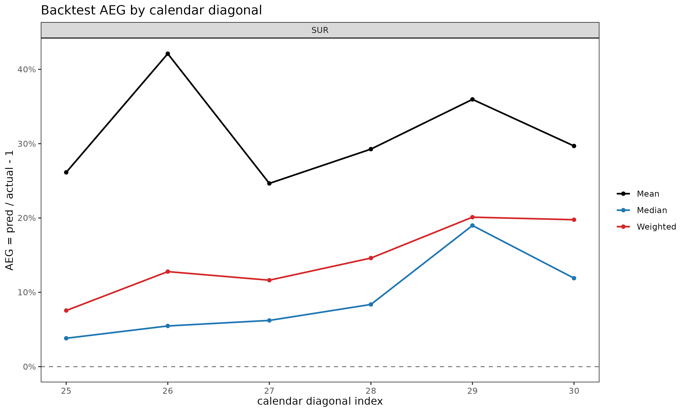

Backtest: holding out the latest diagonals to validate projections
Source:vignettes/backtest.Rmd
backtest.RmdMotivation
Reserving and projection methods are fitted on observed data, but
their practical value lies in how they would have performed at past
valuation dates. backtest() answers that question by hiding
the latest holdout calendar diagonals from a triangle,
refitting the model on the earlier portion, and comparing its projection
to the actuals that were withheld. This is calendar-diagonal hold-out
(rather than dev-period hold-out), because it simulates “what would the
model have said K months ago at the valuation date?”. The
cell-level metric (ae_err, “A/E Error”) follows the
standard actuarial A/E convention,
,
where positive values flag under-projection (the model under-estimated;
actual exceeded expected) and negative values flag over-projection.
Basic usage
library(lossratio)
data(experience)
tri_sur <- as_triangle(
experience[coverage == "surgery"],
groups = "coverage",
cohort = "uy_m",
calendar = "cy_m",
loss = "incr_loss",
exposure = "incr_exposure"
)
bt <- backtest(tri_sur, holdout = 6L)
print(bt)
#> <Backtest>
#> dispatcher: fit_ratio
#> target : ratio
#> holdout : 6 diagonals (159 cells)
#> A/E Error : mean -9.38% / median -4.39%The returned object is a "Backtest" list with these key
slots:
-
ae_err— per-celldata.table(cohort, dev, actual, expected, aeg, ae_err +_incrsiblings, cal_idx). -
col_summary— A/E Error aggregated bydev. -
diag_summary— A/E Error aggregated by calendar diagonal. -
masked— the triangle the fit was trained on (latest diagonals removed). -
fit— the fit object returned by the target-specific dispatcher (fit_ratio/fit_loss/fit_exposure) chosen bytarget=.
summary(bt) prints the two summary tables alongside the
call metadata.
Validation coverage after masking
Masking the latest holdout diagonals shortens the
triangle’s lower-right edge. Chain ladder can only project as far as the
largest dev still observed in the masked data, so cells beyond that
range — the oldest cohorts at their latest dev — have no projection to
compare against. These unreachable cells are silently dropped, so
bt$ae_err contains only cells where both an actual and a
finite projection exist.
Practical takeaway: as holdout grows, the validation set
shrinks fastest in the oldest cohorts’ late-dev region — exactly where
chain ladder relies on extrapolation (projection beyond the observed dev
range), so it is the area most in need of validation yet the first to
disappear.
Output interpretation
col_summary — systematic bias by development
period. A consistently signed A/E Error at a given dev signals
a structural mismatch between the model and that maturity. Early-dev
positive values usually reflect inflated link factors; late-dev values
flag tail miscalibration.
head(bt$col_summary, 8)
#> coverage dev n aeg_mean aeg_med ae_err_mean ae_err_med ae_err_wt
#> <char> <int> <int> <num> <num> <num> <num> <num>
#> 1: surgery 2 1 -0.2879721 -0.2879721 -0.3667493 -0.3667493 -0.3667493
#> 2: surgery 3 2 -0.2108693 -0.2108693 -0.2609106 -0.2609106 -0.2668725
#> 3: surgery 4 3 -0.1980716 -0.2262460 -0.2360836 -0.2278978 -0.2407573
#> 4: surgery 5 4 -0.2070832 -0.1696142 -0.2373172 -0.2037644 -0.2364591
#> 5: surgery 6 5 -0.2350791 -0.2220419 -0.2444979 -0.2435615 -0.2485779
#> 6: surgery 7 6 -0.2261834 -0.2456246 -0.2251483 -0.2400164 -0.2303588
#> 7: surgery 8 6 -0.2375787 -0.2195124 -0.2337115 -0.2298462 -0.2424551
#> 8: surgery 9 6 -0.2210369 -0.1791352 -0.2188077 -0.1763073 -0.2257798
#> incr_aeg_mean incr_aeg_med incr_ae_err_mean incr_ae_err_med incr_ae_err_wt
#> <num> <num> <num> <num> <num>
#> 1: -0.5749542 -0.5749542 -0.4291122 -0.4291122 -0.4291122
#> 2: -0.3489404 -0.3489404 -0.2942675 -0.2942675 -0.2942675
#> 3: -0.3738322 -0.3334336 -0.3060770 -0.2730004 -0.3060770
#> 4: -0.4433586 -0.4866788 -0.3243281 -0.3560179 -0.3243281
#> 5: -0.5667766 -0.5767098 -0.4089965 -0.4161644 -0.4089965
#> 6: -0.4048255 -0.5050649 -0.2913899 -0.3635413 -0.2913899
#> 7: -0.6238985 -0.6021573 -0.4242259 -0.4094427 -0.4242259
#> 8: -0.7336689 -0.7388122 -0.4942706 -0.4977357 -0.4942706ae_err_mean averages cell-level A/E Error,
ae_err_med is the median, and
ae_err_wt = sum(actual - proj) / sum(proj) is the
exposure-weighted pooled A/E ratio minus 1. Comparing the three columns
flags whether a few large cells dominate (ae_err_wt very
different from ae_err_med) or the bias is uniform.
diag_summary — calendar-year effect. A
single bad diagonal in otherwise unbiased output points at a calendar
event (a rate change, claim handling shift, or one-off shock) that a
static fitter cannot see by construction.
bt$diag_summary
#> coverage cal_idx n aeg_mean aeg_med ae_err_mean ae_err_med
#> <char> <int> <int> <num> <num> <num> <num>
#> 1: surgery 31 29 -0.04575359 -0.03198719 -0.05658328 -0.02153108
#> 2: surgery 32 28 -0.07040314 -0.05170431 -0.07561194 -0.03549370
#> 3: surgery 33 27 -0.08297822 -0.05675816 -0.08611363 -0.03865162
#> 4: surgery 34 26 -0.10380725 -0.06595414 -0.10216462 -0.04456169
#> 5: surgery 35 25 -0.12608316 -0.08752566 -0.11863390 -0.05863248
#> 6: surgery 36 24 -0.14828046 -0.14817761 -0.13376449 -0.12050537
#> ae_err_wt incr_aeg_mean incr_aeg_med incr_ae_err_mean incr_ae_err_med
#> <num> <num> <num> <num> <num>
#> 1: -0.03788261 -0.30136185 -0.4459253 -0.19728502 -0.3160730
#> 2: -0.05696273 -0.31278712 -0.3376753 -0.20366014 -0.2455593
#> 3: -0.06588038 -0.07618026 -0.2335583 -0.04127158 -0.1580403
#> 4: -0.08133780 -0.26063771 -0.4114195 -0.16056535 -0.2755793
#> 5: -0.09770892 -0.31819948 -0.3999726 -0.21990402 -0.2615089
#> 6: -0.11404379 -0.36981575 -0.3068424 -0.23186701 -0.1978691
#> incr_ae_err_wt
#> <num>
#> 1: -0.2021198
#> 2: -0.2090259
#> 3: -0.0505205
#> 4: -0.1715931
#> 5: -0.2086546
#> 6: -0.2415822A monotone drift across calendar diagonals (as in the surgery example
above, where A/E Error becomes increasingly positive across
25, ..., 30) typically indicates that actuals on the latest
diagonals are running above what the earlier-cohort link factors imply,
i.e. a regime shift the static model has not absorbed.
ae_err — cell-level outliers. For
diagnosing specific cohort × dev cells, inspect bt$ae_err
directly:
head(bt$ae_err, 5)
#> coverage cohort dev actual expected aeg ae_err
#> <char> <Date> <int> <num> <num> <num> <num>
#> 1: surgery 2023-02-01 30 1.474656 1.485769 -0.01111280 -0.007479494
#> 2: surgery 2023-03-01 29 1.441826 1.416462 0.02536395 0.017906553
#> 3: surgery 2023-03-01 30 1.441234 1.424023 0.01721096 0.012086155
#> 4: surgery 2023-04-01 28 1.513021 1.508373 0.00464845 0.003081765
#> 5: surgery 2023-04-01 29 1.531922 1.502555 0.02936662 0.019544454
#> incr_actual incr_expected incr_aeg incr_ae_err cal_idx
#> <num> <num> <num> <num> <int>
#> 1: 1.311699 1.635607 -0.3239081 -0.19803535 31
#> 2: 2.057141 1.335414 0.7217266 0.54045140 31
#> 3: 1.425549 1.635607 -0.2100580 -0.12842811 32
#> 4: 1.573801 1.449050 0.1247511 0.08609165 31
#> 5: 2.055572 1.335414 0.7201577 0.53927654 32Plot demos
Four plot views are registered on "Backtest":
plot(bt, type = "col") # A/E Error by dev (point + dashed zero line)
plot(bt, type = "diag") # A/E Error by calendar diagonal
plot(bt, type = "cell") # per-cohort A/E Error trajectories over dev
plot_triangle(bt) # diverging-color heatmap on the held-out wedge
type = "col" is the right place to look for systematic
dev-period bias; type = "diag" reveals calendar-year drift;
type = "cell" exposes which cohorts contribute the bias;
plot_triangle() puts the cell-level A/E Error values on the
same triangular layout as plot_triangle() for the
underlying fit, with a red/blue diverging palette where red marks
under-projection (actual > pred) and blue marks over-projection
(actual < pred).
Holdout selection
Choose holdout to balance two opposing effects:
- Too large: the masked triangle loses its latest experience, so the oldest cohorts have few or no reachable cells in their later dev periods. The validation set shrinks unevenly, biased toward early dev.
- Too small: the held-out wedge is just a thin diagonal band, which may not capture enough cells to reveal systematic patterns.
Typical choices are holdout = 6L (half-year) for monthly
triangles, or holdout = 12L (full year) for stronger
validation when the triangle has at least 24–30 diagonals of
history.
Choosing the projection target
The default is target = "ratio" with
loss_method = "ed". The loss ratio is unitless and
dimension-free across cohorts of very different volume, so
ae_err_mean and ae_err_med carry a consistent
meaning across the triangle.
A note on
target.targetis the score column — the column on which actual vs. predicted are compared cell-by-cell. It selects which role-specific fitterbacktest()runs internally and which projection column on the fit’s$fulltable is compared against the held-out actuals:
target |
Internal fitter | Method arg | Compared column |
|---|---|---|---|
"ratio" |
fit_ratio() |
loss_method |
ratio_proj |
"loss" |
fit_loss() |
loss_method |
loss_proj |
"exposure" |
fit_exposure() |
exposure_method |
exposure_proj |
The loss_method argument selects the underlying loss /
loss-ratio projection strategy: "ed" (exposure-driven, the
default) is the unconditional safe baseline – no maturity or regime
detection needed; "cl" is the classical chain ladder, which
lets the cohort’s own cum_loss anchor cohort-level drift;
"sa" (stage-adaptive) blends ED before the maturity point
with CL afterwards. The exposure_method argument selects
the premium projection strategy when
target = "exposure".
bt_ed <- backtest(tri_sur, holdout = 6L, loss_method = "ed") # default
bt_cl <- backtest(tri_sur, holdout = 6L, loss_method = "cl")
bt_sa <- backtest(tri_sur, holdout = 6L, loss_method = "sa")
bt_loss <- backtest(tri_sur, holdout = 6L,
target = "loss", loss_method = "cl")
bt_premium <- backtest(tri_sur, holdout = 6L,
target = "exposure", exposure_method = "cl")
print(bt_ed)
#> <Backtest>
#> dispatcher: fit_ratio
#> target : ratio
#> holdout : 6 diagonals (159 cells)
#> A/E Error : mean -9.38% / median -4.39%For monetary impact (loss or premium) backtesting, set
target = "loss" or target = "exposure" to
score the corresponding projection lane directly.
See also
-
vignette("chain-ladder-reserving")—fit_cl()reference. -
vignette("projection")—fit_ratio()and the"sa","ed","cl"methods. -
?backtest,?plot.Backtest,?plot_triangle.Backtest.